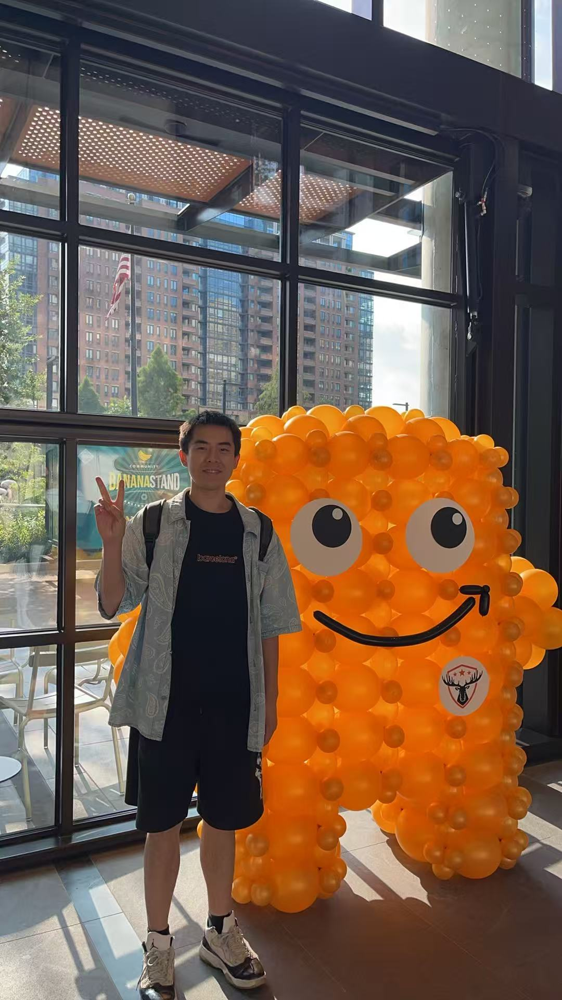

A quick snapshot of my background, strengths, and what I bring to the table.
Software Engineer at Microsoft, building SDK integration-test infrastructure and Linux build/release pipelines across Rust, Python, and C#. Before that I shipped cloud-native backends at AWS and a 16K-line SwiftUI app solo. Columbia MS CS. I like the layer where distributed systems meet the details users actually feel.
Professional experience across SDK infrastructure, cloud platforms, full-stack development, and developer tooling.
Featured work from personal projects, internships, and coursework.
Independently built and shipped a dual-mode (renter/host) car rental iOS app with 36 Swift files and 16K+ lines of code. End-to-end rental flow from vehicle search to Stripe payments and interactive handover.
End-to-end ML pipeline classifying 7 emotion categories from speech audio. Engineered acoustic features with Parselmouth and openSMILE. Optimized SVM with RBF kernel via hyperparameter tuning.
View on GitHubIntelligent food search app with AI chatbot for personalized dish recommendations. Entity extraction and fuzzy matching with Elasticsearch, grounded via RAG for real-time accuracy.
View on GitHub20+ RESTful APIs using Python Flask integrated with AWS RDS, EC2, and Elastic Beanstalk. Angular frontend for real-time data retrieval with Google Cloud SQL backend.
View on GitHubFull-stack MVP with real-time WebSocket data ingestion for device monitoring. CI/CD pipeline with GitHub Actions, automated E2E testing, reducing production failures by 90%.
View on GitHubEngineered distributed caching layer with Redis and Cache-Aside Pattern for Lambda & Glue. Reduced external API calls by 90% with significant decrease in operational costs.
View on GitHubEngineering isn't just my job - it's how I think about the world.
Interested in working together? Let's connect.
The fastest way to reach me is email - I usually reply within a day.
This opens your mail app with everything filled in.